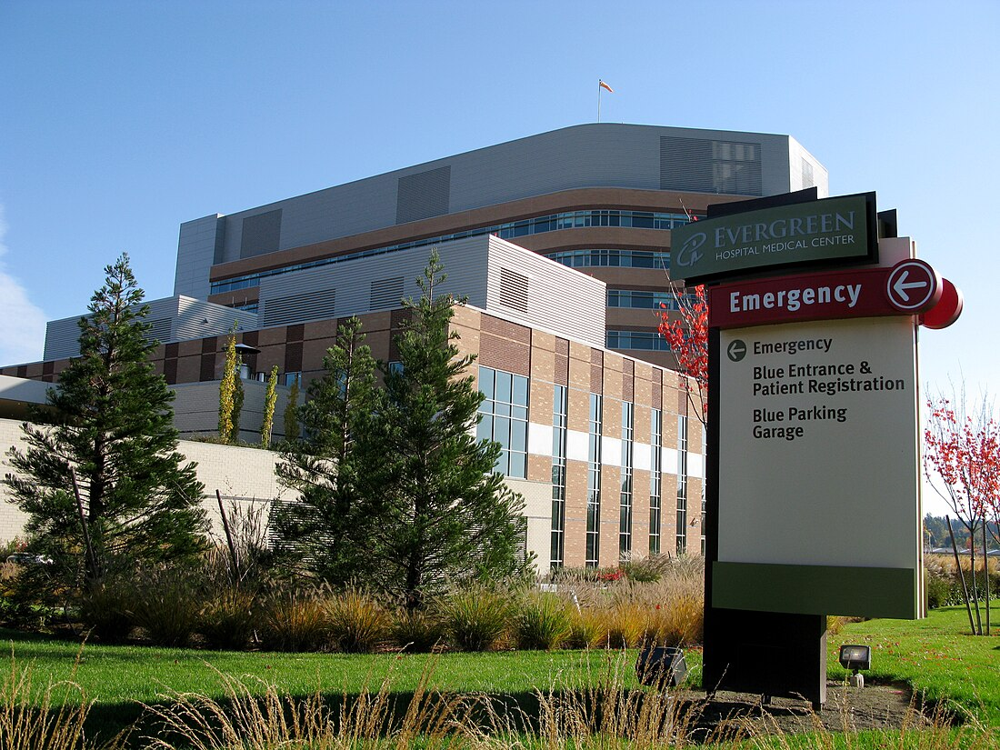

Ever Green Hospital's American branch, located in downtown Chicago, is a premier healthcare facility committed to delivering exceptional medical services to the community. Since its opening in 2010, Ever Green Hospital has become a leader in healthcare, known for its state-of-the-art technology, compassionate care, and patient-centered approach. The hospital is equipped with the latest medical technology, including advanced diagnostic imaging, minimally invasive surgical tools, and a fully integrated electronic health record system, ensuring seamless patient care from admission to discharge. The facility offers a comprehensive range of services, including emergency care, surgery, maternity, and specialty clinics, all staffed by a team of highly skilled doctors, nurses, and support personnel dedicated to providing the highest quality of care. In addition to its cutting-edge technology and broad spectrum of services, Ever Green Hospital is renowned for its holistic approach to healthcare. The hospital's wellness programs and community outreach initiatives aim to promote healthier lifestyles and provide valuable education on disease prevention and management, reflecting the institution's belief that healthcare extends beyond the hospital walls. By fostering an environment of compassion, respect, and continuous improvement, Ever Green Hospital is dedicated to building lasting relationships with patients and their families, ensuring they receive not just medical treatment but comprehensive care that addresses their overall well-being.
Ever Green Hospital's Sri Lankan branch, situated in the bustling city of Colombo, stands as a beacon of excellence in the healthcare sector, committed to providing top-notch medical services to the community. Since its establishment in 2010, Ever Green Hospital has quickly gained a reputation as a leader in healthcare, known for its advanced medical technology, compassionate care, and a patient-centered approach. The hospital is equipped with cutting-edge diagnostic imaging tools, minimally invasive surgical equipment, and a fully integrated electronic health record system, which ensures smooth and efficient patient care from admission to discharge. Offering a comprehensive range of services including emergency care, surgery, maternity, and specialized clinics, the hospital is staffed by a team of highly skilled doctors, nurses, and support personnel, all dedicated to delivering the highest standards of care. Beyond its technological advancements and extensive service offerings, Ever Green Hospital is also celebrated for its holistic approach to healthcare. Through its wellness programs and community outreach initiatives, the hospital promotes healthy lifestyles and provides crucial education on disease prevention and management, demonstrating its commitment to community well-being.
Ever Green Hospital's Australia branch, located in the vibrant city of Sydney, is a leading healthcare facility dedicated to providing exceptional medical services to the community. Since its establishment in 2010, Ever Green Hospital has earned a stellar reputation as a healthcare leader, renowned for its cutting-edge medical technology, compassionate care, and patient-focused approach. The hospital is equipped with state-of-the-art diagnostic imaging tools, minimally invasive surgical equipment, and a fully integrated electronic health record system, ensuring seamless and efficient patient care from admission to discharge. Offering a wide range of services, including emergency care, surgery, maternity, and specialized clinics, the hospital is staffed by a team of highly skilled doctors, nurses, and support personnel who are committed to delivering the highest standards of care. Beyond its technological advancements and comprehensive service offerings, Ever Green Hospital is also acclaimed for its holistic approach to healthcare. Through wellness programs and community outreach initiatives, the hospital promotes healthy lifestyles and provides essential education on disease prevention and management, reflecting its dedication to community well-being. By fostering an environment of compassion, respect, and continuous improvement, Ever Green Hospital is committed to building strong, lasting relationships with patients and their families, ensuring they receive comprehensive care that extends beyond medical treatment.
| Category | Description | Details | Additional Info |
|---|---|---|---|
| Mission | Our Mission | To provide compassionate, comprehensive healthcare to our community. | Founded in 1965 |
| Vision | Our Vision | To be the leading healthcare provider in the region, known for our innovation and patient care. | Full list available on our website |
| Services | Available Services | Emergency Care, Pediatrics, Oncology, Cardiology, Orthopedics, and more. | Checkout the services page |
| Accreditations | Certifications | Joint Commission Accredited, Magnet Recognized. | Awarded Best Hospital 2023 |
| Contact | Get in Touch | Phone: 075690018 , Email: info@evergreenhospital.com | Follow us on social media |
| FOR MORE INFORMATION CONTACT THIS NUMBER : 0758690018 | |||